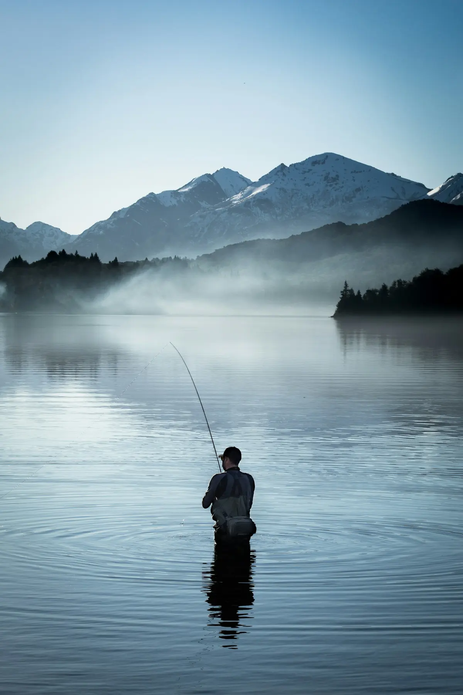
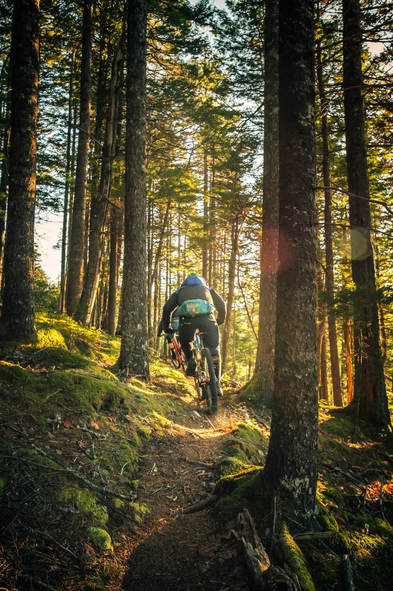

Basketball · Games · Fishing · Riding
Ride thenext line.
I’m Dylan. Basketball, games, good casts, and the next line on two wheels—that’s my kind of day.
Meet me02 / About me
Three words.
One direction.
A quick snapshot of who I am and what keeps me moving forward.
Competitive.
Adventurous.
I can spend ages dialing in the same bike line until it feels just right.
Keep learning bigger skills—on the trail, on the court, and everywhere else.
03 / Off the bike
More ways
to play.
01Fishing+

I like fishing because it’s calm, focused, and every cast feels like a fresh chance.
02Video Games+
NBA 2KRocket LeagueMinecraftRainbow Six Siege
04 / Basketball corner
Built for
the team.
I’m a Warriors fan, and Stephen Curry is the biggest reason why.
Stephen Curry is my favorite player because I think he’s the NBA’s best three-point shooter.
I enjoy playing basketball because it's a team sport and there are lots of different positions.
05 / Favorite movement
Mountain
Biking.

My bike is a Santa Cruz Hightower. I like how every ride can be fast, technical, or completely different from the last.
Explore the Hightower (opens in a new tab) ↗Trick Riding
I like practicing control and finding a smooth line before trying anything bigger.
Trail Riding
Trail rides are my favorite mix of speed, focus, and exploring.
City Riding
Around town, I look for creative lines and keep the ride flowing.
06 / Billie
Better
together.
Draft section: keep hidden until Billie and her parent or guardian approve the exact final copy.
[Add a short relationship note.]
[Add one or two shared interests.]
[Add a general memory without dates or locations.]
[Add non-identifying preferences such as hobbies, favorite music, or favorite color.]